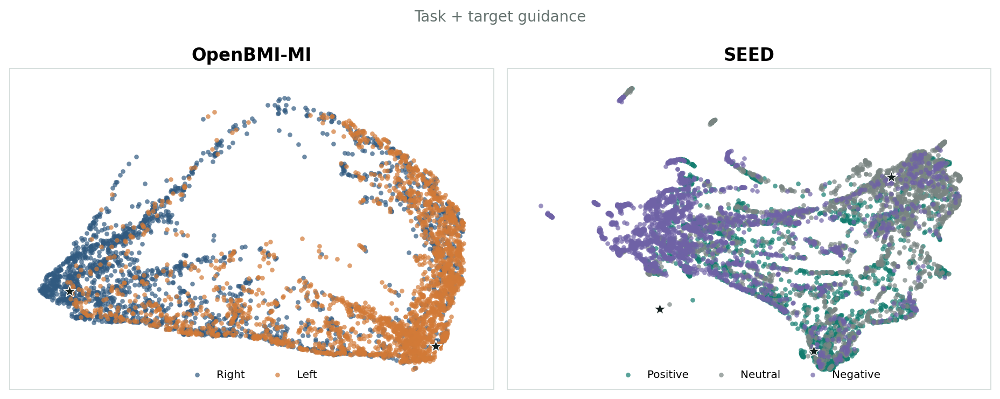

“None”
Loading precomputed embeddings…
Recent advances in electroencephalography (EEG) foundation models, which capture transferable EEG representations, have greatly accelerated the development of brain–computer interfaces (BCI). However, existing approaches still struggle to incorporate language instructions as prior constraints for EEG representation learning, limiting their ability to leverage the semantic knowledge inherent in language to unify different labels and tasks. To address this challenge, we present LEAF, a foundation model for EEG–Language Alignment with Semantic Task Instruction and Querying. LEAF integrates task-aware semantic guidance to produce structured and linguistically aligned EEG embeddings, thereby enhancing decoding robustness and transferability. In the EEG pretraining stage, we introduce a joint Spectral–Temporal Reconstruction (STR) framework that captures the coupled spectral rhythms and temporal dynamics of EEG signals. STR applies randomized spectral perturbation to enhance frequency robustness and uses two complementary temporal objectives to learn both contextual and sequential structure. In the EEG–Language alignment stage, we propose the Instruction-conditioned Q-Former (IQF). This query-based cross-attention transformer injects instruction embeddings into EEG tokens and achieves semantic alignment with textual label embeddings through learnable queries. We evaluate LEAF on 16 downstream datasets spanning motor imagery, emotion recognition, steady-state visual evoked potentials, covert speech, and healthcare tasks. LEAF achieves state-of-the-art performance on 12 of the 16 datasets and obtains the best average results across all five task categories. Importantly, our analyses reveal for the first time that explicit task instructions serve as semantic priors guiding EEG embeddings into coherent and linguistically grounded spaces. The code and pre-trained weights will be released.
A generic placeholder is encoded without task or candidate-label semantics.
“None”
“None”
Text label prototype. Points show the complete test sets; each panel uses one fixed UMAP coordinate system across all three levels.
The interactive data could not be loaded. A static view is shown below.

03
Cross-paradigm benchmark
LEAF leads the evaluated baselines across motor imagery, emotion recognition, and the remaining paradigms, demonstrating that one shared language-aligned representation can support diverse label spaces.
04
Shared geometry
Under task-and-target instructions, EEG embeddings form paradigm-level structures while textual prototypes remain close to their corresponding neural clusters.
Language acts as a task-specific semantic prior: richer instructions improve representation separation, textual prototypes provide shared label semantics, and the resulting aligned space transfers to held-out EEG datasets.
Reproduce LEAF
The repository contains the full pretraining, instruction-tuning, direct-inference, and downstream evaluation pipeline.
05
@article{jiang2026leaf,
title={LEAF: Language-EEG Aligned Foundation Model for Brain-Computer Interfaces},
author={Jiang, Muyun and Zhang, Shuailei and Yang, Zhenjie and Wu, Mengjun and Jiang, Weibang and Liu, Chenyu and Guo, Zhiwei and Zhang, Wei and Liu, Rui and Zhang, Shangen and Li, Yong and Ding, Yi and Guan, Cuntai},
journal={arXiv preprint arXiv:2509.24302},
year={2026}
}